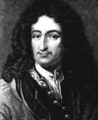

Leibniz, Gottfried Wilhelm (1646-1716); Ünlü bir Alman filozofu, bilim dünyasının en önemli sistemci düşünürlerinden biridir. Matematik, metafizik ve mantık alanlarında ileri sürdüğü yeni düşünce ve görüşleriyle tanınır.
Leibniz, Leipzig'de doğdu. Babası buradaki üniversitede ahlak felsefesi dersleri veriyordu. Leibniz babasının ölümünden sonra okuldan çıkarak kendi kendini yetiştirmeye başladı. Tarihe karşı büyük bir ilgi duyuyordu. 8 yaşına geldiği zaman Latince'yi öğrenmişti. 12 yaşında ise Yunanca öğrenmeye başladı. Bir yandan da mantık bilimiyle ilgili kitaplar okuyordu. 15 yaşında Leipzig Üniversitesi'ne girdi. Almanya'da felsefe tarihinin kurucusu sayılan Jakob Thomasius'tan felsefe okudu. 1663'te Jena'ya giderek buradaki ünlü matematik bilginlerinden ders aldı.
Leibniz, 25 yaşına geldiği sırada yayınlanmış birçok önemli eseri vardı. Bir ara politika ile ilgilendi, bu konuda da bazı eserler verdi.
Politika çalışmaları hiçbir zaman Leibniz'in felsefe ve matematik alanlarındaki çalışmalarına engel olmadı. Leibniz 1672 yılında, 26 yaşında ileri modern matematik çalışmalarına başladı. Bundan 3 yıl sonra Isaac Newton'dan bağımsız olarak Calculus'un temel teoremini keşfetti (Fundamental Theorem of Calculus). Pek çok yıl Leibniz ve Isaac Newton taraftarları arasında kimin Calculus'u keşfettiğine dair bir tartışma olsa da şuan Leibniz ve Isaac Newton Calculus'un babaları olarak kabul edilmektedir.
1700'de görevini bırakarak Viyana'ya gitti, 1714'de kadar bu şehirde yaşadı. 1700'de bir davet üzerine, Berlin'e gitti. Berlin Üniversitesi'nin kurulmasını sağlayarak üniversitenin ilk müdürü oldu.
1711'de görevini bırakarak Viyana'ya gitti, 1714'e kadar bu şehirde yaşadı. 1712'de Leibniz'e baron payesi verildiyse de dört yıl sonra Hannover'de öldüğü zaman fakir bir adam gibi gömüldü. Onun arkasından ağlayan tek adam olan, arkadaşı J. G. von Erckhart, sonradan yazdığı hatıralarında bu cenazeyi, 'ülkesinin şerefini temsil eden bu adam, bir dilenci gibi toprağa verildi' cümlesiyle anlatmıştır.